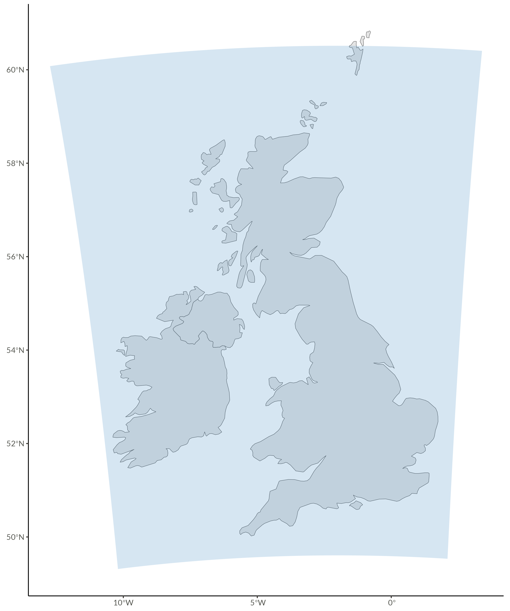
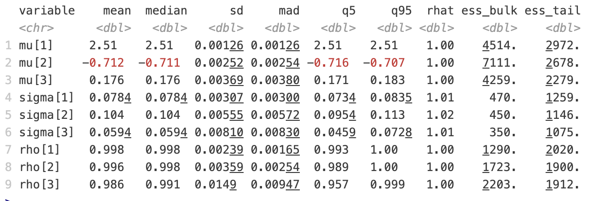
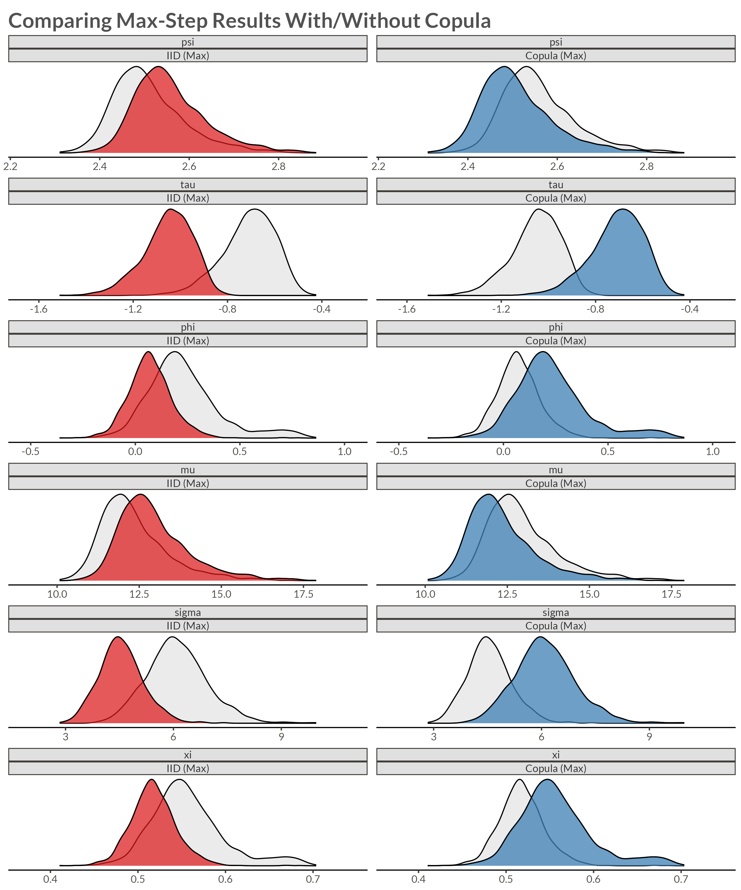

Improved 21st Century Projections
PhD Midterm Presentation
University of Iceland
Extreme Precipitation


- Climate Change Impact
- Increasing frequency of extreme events
- Higher intensity precipitation
- Sub-daily timescale impacts
- Modeling Challenges
- Complex spatial dependencies
- High-resolution requirements
- Non-stationary patterns
- Research Goals
- Efficient statistical methods
- Improved uncertainty quantification
- Scalable computational approach
Large Datasets
- UKCP Local Projections on a 5km grid over the UK (1980-2080) [3]
- Challenge: Modeling maximum daily precipitation in yearly blocks
- 43,920 spatial locations on a 180 x 244 grid
- Four parameters per location as in [4]
- Location, Trend, Scale, Shape
- Two aspects of spatial dependence:
- GEV parameters (Spatial models)
- Data-level dependence (Copulas)

Overview
Methodology Development
- Max-and-Smooth Framework
- Two-step statistical approach
- Efficient parameter estimation
- Spatial dependence modeling
- Copula Integration
- Matérn-like spatial structure
- Improved extremal dependence
- Computational efficiency
Applications & Impact
- Climate Projections
- UKCP recalibration
- Bias correction methods
- Uncertainty quantification
- Software Implementation
- R package development
- High-performance computing
- User-friendly interface
Key Innovations
- Novel spatial dependence structure for extreme precipitation
- Efficient algorithms for large-scale computation
- Improved uncertainty assessment in climate projections
Max-and-Smooth
Two-Step Approach
- Max Step: Maximum Likelihood
- Independent local estimates \(\hat{\eta}_i\)
- Asymptotic normality: \[ \hat{\eta}_i \stackrel{a}{\sim} N(\eta_i, \mathbf{Q}_{\eta y,i}^{-1}) \]
- Observed information matrix \(\mathbf{Q}_{\eta y,i} = -\nabla^2\ell_i(\hat{\eta}_i)\)
- Smooth Step: Spatial Model
- Gaussian approximation: \[ \hat{\eta} \mid \eta \sim N(\eta, \mathbf{Q}_{\eta y}^{-1}) \]
- Latent field prior: \[ \eta \mid \theta \sim N(0, \mathbf{Q}_\eta(\theta)^{-1}) \]
- Hyperprior: \(p(\theta)\)
Posterior: The joint posterior distribution becomes:
\[ p(\eta, \theta \mid \hat{\eta}) \propto p(\hat{\eta} \mid \eta)p(\eta \mid \theta)p(\theta) \]
where \(\eta\) is the latent field, \(\theta\) are hyperparameters, and \(\hat{\eta}\) are the local MLEs.
Calculating Multivariate Normal Densities
\[ \log f(\mathbf{x}) = \frac{1}{2}\left(\log |\mathbf{Q}| - \mathbf{x}^T\mathbf{Q}\mathbf{x}\right) + \mathrm{constant} \]
Computational challenges
- Log Determinant: \(\log |\mathbf{Q}|\)
- Constant for a given precision matrix
- Quadratic Form: \(\mathbf{x}^T\mathbf{Q}\mathbf{x}\)
- Needs calculation for each density evaluation
Spatial Models
Conditional Autoregression (CAR) [7]
- \(\mathbf{D}\) is a diagonal matrix with \(D_{ii} = n_i\), the number of neighbours of \(i\)
- \(\mathbf{A}\) is the adjacency matrix with \(A_{ij} = A_{ji} = 1\) if \(i \sim j\)
\[ \begin{aligned} \mathbf{x} &\sim N(\mathbf{0}, \tau \mathbf{Q}) \\ \mathbf{Q} &= \mathbf{D}\left(\mathbf{I} - \alpha \mathbf{A} \right) \end{aligned} \]
Intrinsic Conditional Autoregression (ICAR) [8]
- \(\alpha = 1\), so \(\mathbf Q\) is singular, but constant
- Don’t have to calculate \(\log |\mathbf{Q}|\)
\[ \begin{aligned} \mathbf{x} &\sim N(\mathbf{0}, \tau \mathbf{Q}) \\ \mathbf{Q} &= \mathbf{D} - \mathbf{A} \end{aligned} \]
BYM (Besag-York-Mollié) Model [8]
- \(\mathbf{u}\) is the structured spatial component (Besag model)
- \(\mathbf{v}\) is the unstructured component (i.i.d. normal)
\[ \begin{aligned} \mathbf{x} &= \mathbf{u} + \mathbf{v} \\ \mathbf{u} &\sim \mathrm{ICAR}(\tau_u) \\ \mathbf{v} &\sim N(\mathbf{0}, \tau_v^{-1}) \end{aligned} \]
BYM2 Model [9–10]
- \(\rho\) models how much of variance is spatial
- \(s\) is a scaling factor chosen to make \(\mathrm{Var}(\mathbf u_i) \approx 1\)
\[ \begin{aligned} \mathbf{x} &= \left(\left(\sqrt{\rho/s}\right)\mathbf{u} + \left(\sqrt{1 - \rho}\right) \mathbf{v} \right)\sigma \\ \mathbf{u} &\sim \mathrm{ICAR}(1) \\ \mathbf{v} &\sim N(\mathbf{0}, n) \end{aligned} \]
From Data-level Independence to Dependence
Parameter-level Dependence
- Assumes conditional independence
- Biased joint probability estimates
- Underestimates parameter variance
Copula
- Improves joint probabilities
- Enhances spatial risk assessment
- Better variance estimates
Sklar’s Theorem: For any multivariate distribution \(H\), there exists a unique copula \(C\) such that:
\[ H(\mathbf x) = C(F_1(x_1), \dots, F_d(x_d)) \]
where \(F_i\) are marginal distributions. We can also write this as a density
\[ h(x) = c(F_1(x_1), \dots, F_d(x_d)) \prod_{i=1}^d f_i(x_i) \]
Matérn-like Gaussian Copula
\[ \begin{gathered} \log h(\mathbf x) = \log c\left(F_1(x_1), \dots, F_d(x_d)\right) + \sum_{i=1}^d \log f_i(x_i) \end{gathered} \]
Marginal CDFs
- \(F_i(x_i)\) is \(\mathrm{GEV}(\mu_i, \sigma_i, \xi_i)\)
- Can model parameter dependence with BYM2
\[ \begin{aligned} \log h(\mathbf x) &= \log c(u_1, \dots, u_d) \\ &+ \sum_{i=1}^d \log f_{\mathrm{GEV}}(x_i \vert \mu_i, \sigma_i, \xi_i) \\ u_i &= F_{\mathrm{GEV}}(x_i \vert \mu_i, \sigma_i, \xi_i) \end{aligned} \]
Gaussian Copula
- Matérn-like precision matrix \(\mathbf{Q}\) [11]
- If \(\mathbf{Q} = \mathbf{I}\) simplifies to independent margins
- Scaled so \(\boldsymbol{\Sigma} = \mathbf{Q}^{-1}\) is correlation matrix
- Need to calculate marginal variances [12–14]
- How to generate, scale and compute with \(\mathbf{Q}\) quickly (for MCMC)?
\[ \begin{aligned} \log c(\mathbf u) &\propto \frac{1}{2}\left(\log |\mathbf{Q}| - \mathbf{z}^T\mathbf{Q}\mathbf{z} + \mathbf{z}^T\mathbf{z}\right) \\ \mathbf{z} &= \Phi^{-1}(\mathbf u) \end{aligned} \]
The Precision Matrix
\(\mathbf Q\) defined as Kronecker sum of two AR(1) precision matrices, similar to [11]
\[ \mathbf{Q} = \left( \mathbf{Q}_{\rho_1} \otimes \mathbf{I_{n_2}} + \mathbf{I_{n_1}} \otimes \mathbf{Q}_{\rho_2} \right)^{\nu + 1}, \quad \nu \in \{0, 1, 2\} \]
\[ \mathbf{Q}_{\rho_{1}} = \frac{1}{1-\rho_{1}^2} \begin{bmatrix} 1 & -\rho_{1} & 0 & \cdots & 0 \\ -\rho_{1} & 1+\rho_{1}^2 & -\rho_{1} & \cdots & 0 \\ 0 & -\rho_{1} & 1+\rho_{1}^2 & \cdots & 0 \\ \vdots & \vdots & \vdots & \ddots & \vdots \\ 0 & 0 & 0 & \cdots & 1 \end{bmatrix} \]
\[ \mathbf{Q}_{\rho_{2}} = \frac{1}{1-\rho_{2}^2} \begin{bmatrix} 1 & -\rho_{2} & 0 & \cdots & 0 \\ -\rho_{2} & 1+\rho_{2}^2 & -\rho_{2} & \cdots & 0 \\ 0 & -\rho_{2} & 1+\rho_{2}^2 & \cdots & 0 \\ \vdots & \vdots & \vdots & \ddots & \vdots \\ 0 & 0 & 0 & \cdots & 1 \end{bmatrix} \]
\[ \mathbf Q = \begin{bmatrix} \frac{1}{(1-\rho_1^2)}\mathbf{I_{n_2}} + \mathbf{Q_{\rho_2}} & \frac{-\rho_1}{(1-\rho_1^2)}\mathbf{I_{n_2}} & \dots & \cdots & \dots \\ \frac{-\rho_1}{(1-\rho_1^2)}\mathbf{I_{n_2}} & \frac{(1+\rho_1^2)}{(1-\rho_1^2)}\mathbf{I_{n_2}} + \mathbf{Q_{\rho_2}} & \frac{-\rho_1}{(1-\rho_1^2)} \mathbf{I_{n_2}} & \cdots & \vdots \\ \vdots & \ddots & \ddots & \ddots & \vdots \\ \dots & \dots & \cdots & \frac{-\rho_1}{(1-\rho_1^2)} \mathbf{I_{n_2}} & \frac{1}{(1-\rho_1^2)}\mathbf{I_{n_2}} + \mathbf{Q_{\rho_2}} \end{bmatrix}^{\nu + 1} \]
Connection to SPDE approach [11]
- Continuous SPDE
A Matérn field \(x(\mathbf{s})\) in continuous space is a solution to
\[ (\kappa^2 - \Delta)^{\alpha/2}\,x(\mathbf{s}) \;=\; \mathcal{W}(\mathbf{s}), \] where \(\Delta = \frac{\partial^2}{\partial x^2} + \frac{\partial^2}{\partial y^2}\) is the Laplacian operator, and \(\alpha\) controls smoothness.
- Discretizing on a Regular Grid
- In 2D, \(\Delta\) on a \(n_1 \times n_2\) grid becomes a Kronecker sum of 1D difference operators: \[ \Delta_ \;\approx\; \mathbf{L}_{1D}^{(x)} \otimes \mathbf{I}_{n_2} \;+\; \mathbf{I}_{n_1} \otimes \mathbf{L}_{1D}^{(y)}. \]
- \(\mathbf{L_{1D}}\) is a second difference matrix \[ \mathbf{L}_{1D} = \begin{bmatrix} -2 & 1 & 0 & \cdots & 0 \\ 1 & -2 & 1 & \cdots & 0 \\ 0 & 1 & -2 & \cdots & 0 \\ \vdots & \vdots & \vdots & \ddots & \vdots \\ 0 & 0 & 0 & \cdots & -2 \end{bmatrix} \]
Eigendecomposition
Because of how \(\mathbf{Q}\) is defined [15], we know that
\[ \begin{aligned} \mathbf{Q} &= \mathbf{V}\boldsymbol{\Lambda}^{\nu + 1}\mathbf{V} \\ &= (\mathbf{V_{\rho_1}} \otimes \mathbf{V_{\rho_2}})(\boldsymbol \Lambda_{\rho_1} \otimes \mathbf{I} + \mathbf{I} \otimes \boldsymbol \Lambda_{\rho_2})^{\nu + 1}(\mathbf{V_{\rho_1}} \otimes \mathbf{V_{\rho_2}})^T \end{aligned} \]
where
\[ \begin{aligned} \mathbf{Q}_{\rho_1} = \mathbf{V_{\rho_1}}\boldsymbol \Lambda_{\rho_1}\mathbf{V_{\rho_1}}^T \qquad \& \qquad \mathbf{Q}_{\rho_2} = \mathbf{V_{\rho_2}}\boldsymbol \Lambda_{\rho_2}\mathbf{V_{\rho_2}}^T \end{aligned} \]
Spectral decomposition defined by value/vector pairs of smaller matrices
\[ \left\{\lambda_{\rho_1}\right\}_i + \left\{\lambda_{\rho_2}\right\}_j \]
\[ \left\{\mathbf{v}_{\rho_1}\right\}_i \otimes \left\{\mathbf{v}_{\rho_2}\right\}_j \]
- Problem: \(\boldsymbol \Sigma_{ii} = \left(\mathbf Q^{-1} \right)_{ii} \neq 1\)
- Solution: \(\mathbf{\widetilde Q} = \mathbf{D}\mathbf{Q}\mathbf{D}\), where \(\mathbf D_{ii} = \sqrt{\boldsymbol \Sigma_{ii}}\)
Marginal Standard Deviations
\[ \boldsymbol \Sigma = \mathbf Q^{-1} = (\mathbf{V}\boldsymbol\Lambda\mathbf{V}^T)^{-1} = \mathbf{V}\boldsymbol \Lambda^{-1}\mathbf{V} \]
We know that if \(A = BC\) then \(A_{ii} = B_{i, .} C_{., i}\), so
\[ \boldsymbol \Sigma_{ii} = \sum_{k=1}^{n} v_{ik} \frac{1}{\lambda_k} (v^T)_{ki} = \sum_{k=1}^{n} v_{ik} \frac{1}{\lambda_k} v_{ik} = \sum_{k=1}^{n} v_{ik}^2 \frac{1}{\lambda_k} \]
Let \(\left\{\lambda\right\}_{ij} = \left\{\lambda_{\rho_1}\right\}_i + \left\{\lambda_{\rho_2}\right\}_j\) and \(\left\{\mathbf{v}\right\}_{ij} = \left\{\mathbf{v}_{\rho_1}\right\}_i \otimes \left\{\mathbf{v}_{\rho_2}\right\}_j\). Compute vector \(\boldsymbol \sigma^2\) containing all marginal variances
\[ \boldsymbol \sigma^2 = \sum_{i = 1}^{n_1} \sum_{j=1}^{n_2} \frac{1}{\left\{\lambda\right\}_{ij}} \cdot \left\{\mathbf{v}\right\}_{ij} \odot \left\{\mathbf{v}\right\}_{ij} \]
Marginal Standard Deviations
bench::mark(
"solve" = solve(Q) |> diag() |> sqrt() |> sort(),
"inla.qinv" = inla.qinv(Q) |> diag() |> sqrt() |> sort(),
"marginal_sd_eigen" = msd(Q1, Q2),
iterations = 10,
filter_gc = FALSE
)# A tibble: 3 × 6
expression min median `itr/sec` mem_alloc `gc/sec`
<bch:expr> <bch:tm> <bch:tm> <dbl> <bch:byt> <dbl>
1 solve 1.28s 1.3s 0.769 78.17MB 0.769
2 inla.qinv 450.08ms 461.9ms 2.01 4.35MB 0
3 marginal_sd_eigen 1.61ms 1.7ms 525. 648.97KB 0 Calculating the (non-copula) density
The Gaussian log pdf is \[ \log f(\mathbf{z} \vert \mathbf{Q}) = \frac{1}{2}\left(\log|\mathbf{Q}| - \mathbf{z}^T\mathbf{Q}\mathbf{z}\right) + \mathrm{constant} \]
Without scaling of \(\mathbf Q\) we get
\[ \log|\mathbf{Q}| = \sum_{k=1}^{n_1n_2}\log\lambda_k = \sum_{i=1}^{n_1}\sum_{j=2}^{n_2} \log\left[\left(\left\{\lambda_{\rho_1}\right\}_i + \left\{\lambda_{\rho_2}\right\}_j\right)^{\nu + 1}\right] \]
\[ \mathbf{z}^T\mathbf{Q}\mathbf{z} = \sum_{k=1}^{n_1n_2}\lambda_k \left(v_k^T\mathbf z\right)^2 = \sum_{i=1}^{n_1}\sum_{j=2}^{n_2} \left(\left\{\lambda_{\rho_1}\right\}_i + \left\{\lambda_{\rho_2}\right\}_j\right) \left[\left(\left\{\mathbf{v}_{\rho_1}\right\}_i \otimes \left\{\mathbf{v}_{\rho_2}\right\}_j\right)^T\mathbf z\right]^2 \]
Calculating the copula density
Let \(\mathbf v = \left\{\mathbf{v}_{\rho_1}\right\}_i \otimes \left\{\mathbf{v}_{\rho_2}\right\}_j\) and \(\lambda = \left(\left\{\lambda_{\rho_1}\right\}_i + \left\{\lambda_{\rho_2}\right\}_j\right)^{\nu + 1}\). Normalise \(\mathbf v\) and \(\lambda\) with
\[ \begin{gathered} \widetilde{\mathbf{v}} = \frac{\sigma \odot \mathbf{v}}{\vert\vert \sigma \odot\mathbf{v}\vert\vert_2}, \qquad \widetilde{\lambda} = \vert\vert \sigma \odot\mathbf{v}\vert\vert_2^2 \cdot \lambda \end{gathered} \]
Then \(\widetilde{\mathbf{v}}\) and \(\widetilde{\lambda}\) are an eigenvector/value pair of the scaled precision matrix \(\mathbf{\widetilde{Q}}\). Iterate over \(i\) and \(j\) to calculate
\[ \log c(\mathbf{z} \vert \mathbf{\widetilde{Q}}) = \frac{1}{2}\log|\mathbf{\widetilde Q}| - \frac{1}{2}\mathbf{z}^T\mathbf{\widetilde Q}\mathbf{z} + \frac{1}{2}\mathbf{z}^T\mathbf{z} \]
Maximum Likelihood
Setup
Log-likelihood
log_lik <- function(par, Y) {
mu <- exp(par[1])
sigma <- exp(par[2] + par[1])
xi <- exp(par[3])
rho1 <- plogis(par[4])
rho2 <- plogis(par[5])
u <- evd::pgev(Y, loc = mu, scale = sigma, shape = xi)
z <- qnorm(u)
ll_marg <- sum(evd::dgev(Y, loc = mu, scale = sigma, shape = xi, log = TRUE))
ll_copula <- sum(dmatern_copula_eigen(z, dim1, dim2, rho1, rho2, nu))
ll_copula + ll_marg
}Optimize
Max-step: IID Case
- \(P\): number of stations, \(N\): replicates at each station
Independent Likelihood: Marginal GEV distributions:
\[ \ell(\theta|Y) = \sum_{i=1}^P \ell_{\text{GEV}}(Y_{i}|\mu_i,\sigma_i,\xi_i) = \sum_{i=1}^P \sum_{j=1}^N \ell_{\text{GEV}}(Y_{ij}|\mu_i,\sigma_i,\xi_i) \]
Multivariate Link Function: \[ \mu = e^\psi, \quad \sigma = e^{\psi + \tau}, \quad \xi = g(\phi) \]
Key Properties:
- \(\mathbf Q_{\eta y}\) is a banded matrix
- Parallel processing using L-BFGS with automatic differentiation
- Weak normal priors on transformed parameters
Max-step: Adding Dependence
Combined Likelihood: Added Matérn-like Gaussian copula:
\[ \begin{gathered} \ell(\theta|Y) = \sum_{j=1}^N \left[\sum_{i=1}^P \ell_{\text{GEV}}(Y_{ij}|\mu_i,\sigma_i,\xi_i) + \frac{1}{2}\left(\log|\mathbf{Q}| - Z_j^T\mathbf{Q}Z_j + Z_j^TZ_j\right) \right], \\ Z_j = \Phi^{-1}(U_j), \qquad U_{ij} = F_\mathrm{GEV}(Y_{ij} \vert \mu_i, \sigma_i, \xi_i) \end{gathered} \]
Key Changes:
- \(\mathbf Q_{\eta y}\) structure based on \(\nu\), smoothness in the copula
- Parallel processing of replicates instead of stations
- \(\mathbf Q\) assumed known
- Copula likelihood calculated using sparse representation of \(L\)
- Acklam’s Algorithm for \(\Phi^{-1}\) [16]
Smooth-step
Gaussian Approximation: Based on sparse Cholesky factor, \(L\), of \(Q_{\eta y}\)
\[ \log p(\hat\eta \mid \eta, L) = \frac{1}{2}\log|Q_{\eta y}| - \frac{1}{2}\left\|\left(\sum_{i=1}^{n_1n_2}\sum_{j=1}^{\vert \mathcal I(i) \vert} L_{i\mathcal I(i)_j}(\hat\eta_{i\mathcal I(i)_j} - \eta_{i\mathcal I(i)_j})\right)_{i=1}^n\right\|^2 \]
Spatial Prior: BYM2 [9–10] model for each GEV parameter \(k\)
\[ \eta_k = \mu_k\mathbf{1} + \sigma_k(\sqrt{\rho_k/c} \cdot \eta^{\mathrm{spatial}}_k + \sqrt{1-\rho_k}\cdot\eta^{\mathrm{random}}_k), \]
where \(c\) is a scaling factor chosen so \(E_{\mathrm{geo}}\left[\mathrm{Var}(\eta^{\text{spatial}}_k)\right] = 1\)
Prior Specifications:
- \(\eta^{\text{spatial}}_k \sim \text{ICAR}\) [8] with sum-to-zero constraint
- \(\eta^{\text{random}}_k \sim N(0,1)\)
- \(\sigma_k \sim \text{Exp}(1)\)
- \(\rho_k \sim \text{Beta}(1,1)\)
Gaussian Copula
Unscaled
|
Scaled
|
|||||||
|---|---|---|---|---|---|---|---|---|
| Grid | Cholesky |
Eigen
|
Eigen |
Circulant
|
Folded
|
|||
| Time | Relative | Time | Relative | Time | Relative | |||
| 20x20 | 312.56µs | 155.88µs | 49.9% | 235.59µs | 36.2µs | 15.4% | 115.09µs | 48.9% |
| 40x40 | 1.77ms | 543.76µs | 30.7% | 1.65ms | 115.8µs | 7.0% | 300.9µs | 18.3% |
| 60x60 | 6.33ms | 1.8ms | 28.5% | 7.1ms | 188.48µs | 2.7% | 609.71µs | 8.6% |
| 80x80 | 17.98ms | 5.17ms | 28.8% | 21.96ms | 338.15µs | 1.5% | 1.26ms | 5.7% |
| 100x100 | 38.58ms | 11.48ms | 29.8% | 48.44ms | 445.14µs | 0.9% | 2.37ms | 4.9% |
| 120x120 | 81.1ms | 22.74ms | 28.0% | 88.45ms | 719.55µs | 0.8% | 2.82ms | 3.2% |
| 140x140 | 145.26ms | 32.55ms | 22.4% | 168.38ms | 965.71µs | 0.6% | 5.39ms | 3.2% |
| 160x160 | 233.03ms | 54.51ms | 23.4% | 260.7ms | 1.27ms | 0.5% | 5.33ms | 2.0% |
| 180x180 | 359.21ms | 97.4ms | 27.1% | 482.93ms | 1.61ms | 0.3% | 10.22ms | 2.1% |
| 200x200 | 567.01ms | 147.51ms | 26.0% | 676.53ms | 1.84ms | 0.3% | 8.62ms | 1.3% |
| 220x220 | 791.13ms | 206.13ms | 26.1% | 994.11ms | 2.59ms | 0.3% | 13.55ms | 1.4% |
| 240x240 | 1.07s | 287ms | 26.8% | 1.34s | 2.82ms | 0.2% | 14.77ms | 1.1% |
Max-and-Smooth


Paper 1
Matérn-like Copula and Max-and-Smooth
Theoretical Development
- Novel Matérn-like copula integration
- Efficient computational methods:
- Kronecker sum decomposition
- Eigendecomposition techniques
- Folded circulant approximations
Key Contributions
- Mathematical framework for spatial extremes
- Computational efficiency for large grids
- Theoretical validation through simulation
- Improved spatial dependence modeling
Paper 2
Recalibration of Projections with Latent Bayeslinear Method
UKCP Local Projections
- Analysis of 5km grid projections
- Sub-daily precipitation patterns
- Comparison with observed data
- Systematic bias identification
Methodology
- Hierarchical statistical modeling
- Spatial dependence calibration
- Uncertainty quantification
- Improved 21st century projections
Paper 3
Manuscript on R Package
R Package Implementation
- Comprehensive software package
- C++ integration for efficiency
- Parallel processing capabilities
- User-friendly interface design
Features
- Documentation and vignettes
- Example datasets
- Visualization tools
- Integration with spatial packages